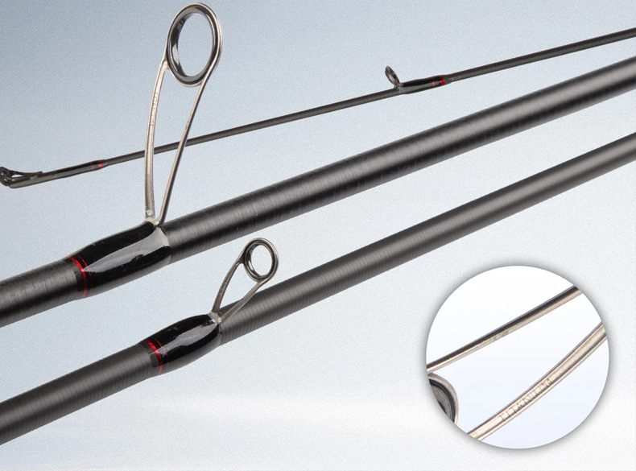
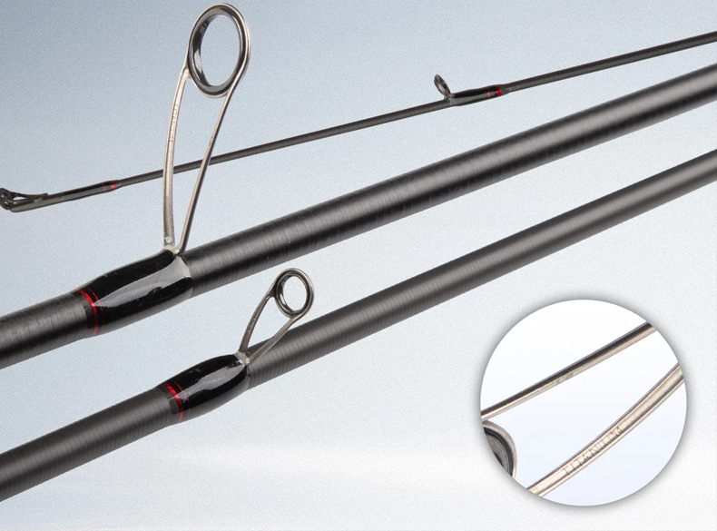

La THAUMAS 862ML es una caña diseñada específicamente para eging y pesca de cefalópodos, orientada a pescadores que buscan un salto real de calidad respecto a cañas low cost habituales.
Construida con carbono TORAY T1100 + M40X y una estructura de carbono de 4 ejes, ofrece una combinación muy poco habitual en este rango de precio: ligereza extrema, alta sensibilidad y una reserva de potencia sólida.
El blank utiliza una combinación avanzada de T1100 + M40X, capaz de absorber impactos multidireccionales y reducir el estrés generado durante la carga y descarga de la caña.
Las anillas con bastidor de titanio y cerámica de nitruro de silicio reducen la fricción y mejoran la durabilidad frente al uso continuado con trenzados. Las uniones están reforzadas con tejido de carbono 4K, aportando precisión y una estética muy cuidada.
La THAUMAS 862ML es una caña que justifica plenamente su precio. No es la opción más barata de la web, pero sí una de las más equilibradas y técnicas para eging serio.
Recomendada para pescadores que buscan mejorar sensaciones, control del egi y detección de picadas, especialmente combinada con un carrete ligero y un trenzado fino con bajo de fluorocarbono.
Valoración Egis Low Cost: ★★★★☆ (4,6/5)
Diseñada para pesca de calamar y sepia con egis de tamaño medio, la THAUMAS 862ML ofrece una experiencia de pesca precisa, sensible y fiable, ideal para pescadores que buscan un equipo técnico sin entrar en gamas de precio premium.